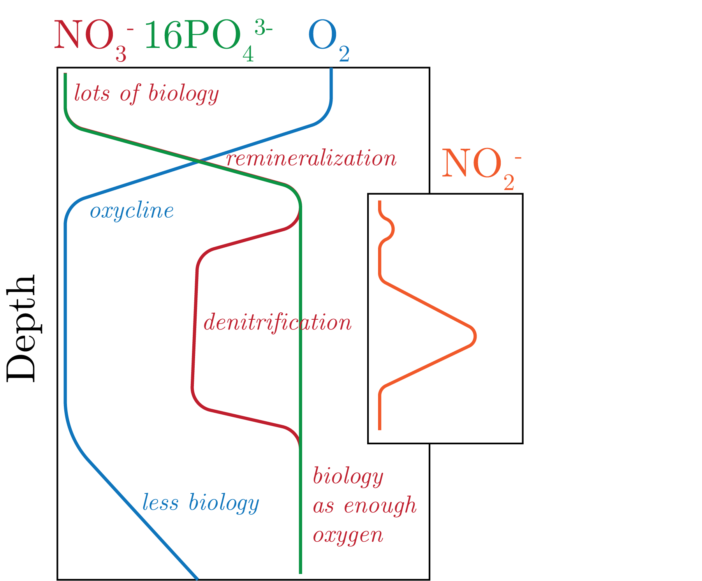

In the Martin curve, there is an important tuned parameter $b$, which as a global average is about $b = 0.86$.
We can derive this equation by assuming $\partial_z w_{\text{sink}} = kz$, and then solve the DE.
This $b$ we get from this solution really changes based on the composition of the particle, with that being more energetically favourable being the most important characteristic.
From Stokes' Law we say that really it is the density that drives the $b$.
We can also look at the size classes of particles, and see a nearly linear decrease over nearly 10 orders of magnitude in both size and number, showing that the smaller the particle the more likely it is in the ocean.
We can also see that this is the case through the water column as well.
Surely we see that there is an order of magnitude greater value of DOC in the ocean than POC, which we can see comparing POC to TOC plots of the ocean.
However, we note that this DOC is not energetically preferable to the organisms compared to the POC, i.e., the "beer and broccoli" analogy.
This divides labile (favourable) to refractory/recalcitrant (non-favourable) carbon particles.
One exciting new idea is "chemotaxis", that is that there is a "trail" of nutrients behind particles that organisms can follow.
We could call this as a "chemi-attractant".
Elemental Cycles
We can see the relation of all of these cycles together in Fig. 1.

Fig. 1: A profile of three important nutrients.
Oxygen
OMZs mostly occur in the ETNP, ETSP, and the Arabian Sea.
These are caused by high productivity and low transport.
Nitrogen
Of interest to us is why we do not see the amount of denitrification due to anammox (which is about 30%), rather a larger number.
This is from nitrite. We can see in the inset plot of Fig. 1 above that the first maximum is due to chlorophyll whereas the second one is due to anoxic environments, such as in OMZs.
Nitrous Oxide, N$_2$O, correlates 1:-1 with oxygen, as when you consume oxygen you produce nitrous oxide.
N has a 3 [kyr] residence time.
Fe
Mostly supplied by the semi-arid Sahel dust.
This is massively limiting nutrient and is a driver for N fixation, as well as a cofactor for many enzymatic reactions, which generally increase productivity.
We have "the iron hypothesis", in which more Fe in the high latitudes leads to more productivity that sinks and therefore the concentration of carbon dioxide goes down.
This is supported by $^{232}$Th records and is really driven by the dust flux and wind conditions, though you have to be careful with the vapour pressure, as this will affect the rainout and it's respective distribution.
Organisms have an ability to regulate how much iron they use, when, and where.
P
Similar to Fe, P is supplied by dust to the ocean with a 50 [kyr] residence time.
ENSO
During ENSO, we have a deeper thermocline and thus more stratification, which means that there will be less nutrient transport and less productivity.
This is contrasted against La Nina, which is a wind intensification and we see the opposite effect.
Limitation
There is a different between proximal and ultimate limitation:
\begin{equation}
\underbrace{\uparrow \text{Fe}}_{\text{Ultimate}} \to \underbrace{\uparrow \text{N}}_{\text{proximal}} \to \quad \uparrow \text{NPP}.
\end{equation}
We could also say that instead of Fe we have P.
The ultimate definition is timescale dependent.
For instance, many geochemists do not consider N to be limiting, as it has an atmospheric reservoir.
However, biologists will consider it limiting because on short timescales it does matter, though on longer timescales this is not the case given the equilibration with the atmosphere.